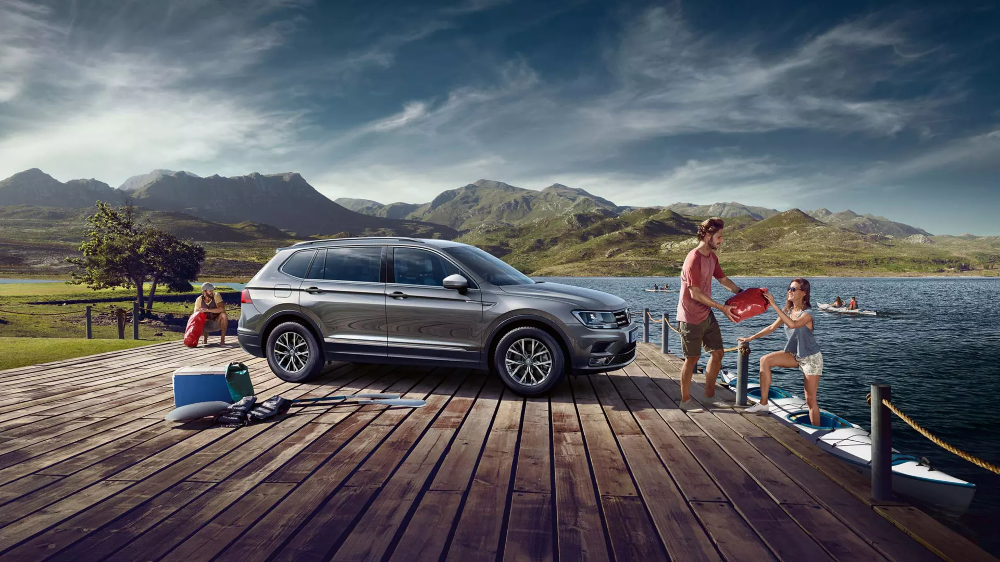

El Tiguan destaca por todas partes.
El motor 250 TSI con potencia de 150cv está diseñado para lograr altos niveles de performance con menor consumo. Tiene cuatro modos de manejo: Eco, Sport, Normal y personalizada. Equipado con sensores y cámara de retroceso para que los obstáculos a la hora de estacionar sean cosa del pasado. El Vento incorpora sistemas de seguridad de serie en todas sus versiones: ABS, ESC, ASR, HHC (Asistente de arranque en pendiente) y muchos más.